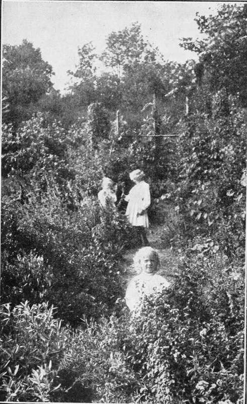

Culinary Herbs: Their Cultivation, Harvesting, Curing and Uses | by M. G. Kains
If this book shall instill or awaken in its readers the wholesome though "cupboard" love that the culinary herbs deserve both as permanent residents of the garden and as masters of the kitchen, it will have accomplished the object for which it was written.
| Title | Culinary Herbs: Their Cultivation, Harvesting, Curing and Uses |
| Author | M. G. Kains |
| Publisher | Orange Judd Company |
| Year | 1912 |
| Copyright | 1912, Trubner & Co., Limited |
| Amazon | Culinary Herbs, Their Cultivation, Harvesting, Curing and Uses |
By M. G. Kains, Associate Editor American Agriculturist
Ah, Zephyrus! art here, and Flora too! Ye tender bibbers of the rain and dew, Young playmates of the rose and daffodil, Be careful, ere ye enter in, to fill Your baskets high
With fennel green, and balm, and golden pines, Savory, latter-mint, and columbines, Cool parsley, basil sweet, and sunny thyme; Yea, every flower and leaf of every clime, All gather'd in the dewy morn: hie Away! fly, fly!
—Keats, " Endymion "
Herbs and Children, a Happy Harmony
Part I: Introduction
 Preface
Preface- A small boy who wanted to make a good impression once took his little sweetheart to an ice cream parlor. After he had vainly searched the list of edibles for something within his means, he whispered t...
- Culinary Herbs
- In these days of jaded appetites, condiments and canned goods, how fondly we turn from the dreary monotony of the dainty menu to the memory of the satisfying dishes of our mothers! What made us, lik...
- A Dinner Of Herbs
- In an article published in American Agriculturist, Dora M. Morrell says: There is an inference that a dinner of herbs is rather a poor thing, one not to be chosen as a pleasure. Perhaps it might be i...
- Culinary Herbs Defined
- It may be said that sweet or culinary herbs are those annual, biennial or perennial plants whose green parts, tender roots or ripe seeds have an aromatic flavor and fragrance, due either to a volatile...
- History
- It seems probable that many of the flavoring herbs now in use were similarly employed before the erection of the pyramids and also that many then popular no longer appear in modern lists of esculents....
- Production Of New Varieties
- Besides the gratification that always accompanies the growing of plants, there is in plant breeding the promise that the progeny will in some way be better than the parent, and there is the certainty ...
- Status And Uses
- Some readers of a statistical turn of mind may be disappointed to learn that figures as to the value of the annual crops of individual herbs, the acreage devoted to each, the average cost, yield and p...
- Notable Instance Of Uses
- The flavors of the various herbs cover a wide range, commencing with fennel and ending with sage, and are capable of wide application. In one case which came under my observation, the cook made a cele...
- Methods Of Curing
- Culinary herbs may be divided into three groups; those whose foliage furnishes the flavor, those whose seed is used and those few whose roots are prepared. In the kitchen, foliage herbs are employed e...
- Drying And Storing
- When only a small quantity of an herb is to be dried, the old plan of hanging loose bunches from the ceiling of a warm, dry attic or a kitchen will answer. Better, perhaps, is the use of trays covered...
- Herbs As Garnishes
- As garnishes several of the culinary herbs are especially valuable. This is particularly true of parsley, which is probably more widely used than any other plant, its only close rivals being watercres...
- Propagation
- Seeds Most herbs may be readily propagated by means of seeds. Some, however, such as tarragon, which does not produce seed, and several other perennial kinds, are propagated by division, layers, or...
- Cuttings
- No herbs are so easy to propagate by means of cuttings as spearmint, peppermint, and their relatives which have underground stems. Every joint of these stems will produce a new plant if placed in some...
- Layers
- Several of the perennial herbs, such as sage, savory, and thyme, may be easily propagated by means of layers, the stems being pegged down and covered lightly with earth. If the moisture and the temper...
- Division
- Division of the clumps of such herbs as mint is often practiced, a sharp spade or a lawn edger being used to cut the clump into pieces about 6 inches square. The squares are then placed in new quarter...
- Transplanting
- No more care is required in transplanting herbs than in resetting other plants, but unless a few essentials are realized in practice the results are sure to be unsatisfactory. Of course, the ideal way...
- Implements
- When herbs are grown upon a commercial scale the implements needed will be the same as for general trucking-plows, harrows, weeder, etc.-to fit the soil for the hand tools. Much labor can be saved by ...
- Location Of Herb Garden
- In general, the most favorable exposure for an herb garden is toward the south, but lacking such an exposure should not deter one from planting herbs on a northern slope if this be the only site avail...
- The Soil And Its Preparation
- As to the kind of soil, Hobson's choice ranks first! It is not necessary to move into the next county just to have an herb garden. This is one of the cases in which the gardener may well make the best...
- Cultivation
- Having thoroughly fined the surface of the garden by harrowing and raking, the seeds may be sown or the plants transplanted as already noted. From this time forward the surface must be kept loose and ...
- Herb Relationships
- Those readers who delight to delve among pedigrees, genealogies and family connections, may perhaps be a little disappointed to learn that, in spite of the odorous nature of the herbs, there are none ...
- Compositae
- Marigold, Pot (Calendula officinalis, Linn.). Tansy (Tanacetum vulgaris, Linn.). Tarragon (Artemisia Dracunculus, Linn.). Southernwood (Artemisia Abrotanum, Linn.). Rutaceae Rue (Ruta graveolens...
Part II: The Herb List
- Angelica
- Angelica (Archangelica officinalis, Hoffm), a biennial or perennial herb of the natural order Umbelliferae, so called from its supposed medicinal qualities. It is believed to be a native of Syria, fro...
- Anise
- Anise (Pimpinella Anisum, Linn.), an annual herb of the natural order Umbelliferae. It is a native of southwestern Asia, northern Africa and southeastern Europe, whence it has been introduced by man t...
- Balm
- Balm (Melissa officinalis, Linn.), a perennial herb of the natural order Labiatae. The popular name is a contraction of balsam, the plant having formerly been considered a specific for a host of ailme...
- Basil
- Basil (Ocymum basilicum. Linn.), an annual herb of the order Labiatae. The popular name, derived from the specific, signifies royal or kingly, probably because of the plant's use in feasts. In France ...
- Borage
- Borage (Borago officinalis, Linn.), a coarse, hardy, annual herb of the natural order Boraginaceae. Its popular name, derived from the generic, is supposed by some to have come from a corruption of co...
- Caraway
- Caraway (Carum carui, Linn.), a biennial or an annual herb of the natural order Umbelliferae. Its names, both popular and botanical, are supposed to be derived from Caria, in Asia Minor, where the pla...
- Catnip, Or Cat Mint
- Catnip, or cat mint (Nepeta cataria, Linn.), a perennial herb of the natural order Labiatae. The popular name is in allusion to the attraction the plant has for cats. They not only eat it, but rub the...
- Chervil
- Chervil (Scandix Cerefolium, Linn.), a southern Europe annual, with stems about 18 inches tall and bearing few divided leaves composed of oval, much-cut leaflets. The small white flowers, borne in umb...
- Chives
- Chives (Allium Schoenoprasum, Linn.), a bulbous, onion-like perennial belonging to the Liliaceae. Naturally the plants form thick tufts of abundant, hollow, grasslike leaves from their little oval bul...
- Clary
- Clary (Salvia sclarea, Linn.), a perennial herb of the natural order Labiatae. The popular name is a corruption of the specific. In the discussion on sage will be found the significance of the generic...
- Coriander
- Coriander (Coriandrum sativum, Linn.), a plant of little beauty and of easiest culture, is a hardy annual herb of the natural order Umbelliferae. The popular name is derived from the generic, which ...
- Cumin
- Cumin (Cuminum Cyminum, Linn.), a low-growing annual herb of the Nile valley, but cultivated in the Mediterranean region, Arabia, Egypt, Morocco, India, China, and Palestine from very early times, (Se...
- Dill
- Dill (Anethum graveolens, Linn.), a hardy annual, native of the Mediterranean and the Black Sea regions, smaller than common fennel, which it somewhat resembles both in appearance and in the flavor of...
- Fennel
- Fennel (Foeniculum officinale, All.), a biennial or perennial herb, generally considered a native of southern Europe, though common on all Mediterranean shores. The old Latin name Foeniculum is derive...
- Finocchio, Or Florence Fennel
- Finocchio, or Florence fennel (F. dulce, D. C), deserves special mention here. It appears to be a native of Italy, a distinct dwarf annual, very thickset herb. The stem joints are so close together an...
- Fennel Flower
- Fennel Flower (Nigella sativa, Linn.), an Asiatic annual, belonging to the Ranunculaceae, grown to a limited extent in southern Europe, but scarcely known in America. Among the Romans it was esteemed ...
- Hoarhound, Or Horehound
- Hoarhound, or horehound (Marrubium vulgare, Linn.), a perennial plant of the natural order Labiatae, formerly widely esteemed in cookery and medicine, but now almost out of use except for making candy...
- Hyssop
- Hyssop (Hyssopus officinalis, Linn.), a perennial evergreen undershrub of the Labiatae, native of the Mediterranean region. Though well known in ancient times, this plant is probably not the one known...
- Lavender
- Lavender , (Lavendula vera, D. C.; L. Angustifolia, Moench.; L. spica, Linn.), a half-hardy perennial undershrub, native of dry, calcareous uplands in southern Europe. Its name is derived from the Lat...
- Lovage
- Lovage (Levisticum officinale, Koch.), a perennial, native of the Mediterranean region. The large, dark-green, shining radical leaves are usually divided into two or three segments. Toward the top the...
- Marigold
- Marigold (Calendula officinalis, Linn.), an annual herb of the natural order Compositae, native of southern Europe. Its Latin name, suggestive of its flowering habit, signifies blooming through the mo...
- Marjoram
- Two species of marjoram now grown for culinary purposes (several others were formerly popular) are members of the Labiatae or mint family-pot or perennial marjoram (Origanum vulgare, Linn.) and sweet ...
- Mint
- Mint (Mentha viridis, Linn.)-Spearmint, a member of the Labiatae, is a very hardy perennial, native to Mediterranean countries. Its generic name is derived from the mythological origin ascribed to it....
- Parsley
- Parsley (Carum Petroselinum, Linn.), a hardy biennial herb of the natural order Umbelliferae, native to Mediterranean shores, and cultivated for at least 2,000 years. The specific name is derived from...
- Parsley Cultivation. Continued
- A layer of earth is placed in the bottom as deep as the lowest tier of holes. Then roots are pushed through these holes and a second layer of earth put in. The process is repeated till the keg is full...
- Pennyroyal
- Pennyroyal (Mentha Pulegium, Linn.), a perennial herb of the natural order Labiatae, native of Europe and parts of Asia, found wild and naturalized throughout the civilized world in strong, moist soil...
- Peppermint
- Peppermint (Mentha piperita, Linn.) is much the same in habit of growth as spearmint. It is a native of northern Europe, where it may be found in moist situations along stream banks and in waste lands...
- Rosemary
- Rosemary (Rosemarinus officinalis, Linn.)-As its generic name implies, rosemary is a native of seacoasts, rose coming from Ros, dew, and Mary from marinus, ocean. It is one of the many Labiatae fo...
- Rue
- Rue (Ruta graveolens, Linn.), a hardy perennial herb of roundish, bushy habit, native of southern Europe. It is a member of the same botanical family as the orange, Rutaceae. In olden times it was hig...
- Sage
- Sage (Salvia officinalis, Linn.), a perennial member of the Labiatae, found naturally on dry, calcareous hills in southern Europe, and northern Africa. In ancient times, it was one of the most highly ...
- Savory, Summer
- Savory, Summer (Satureia hortensis, Linn.), a little annual plant of the natural order Labiatae indigenous to Mediterranean countries and known as an escape from gardens in various parts of the world....
- Savory, Winter
- Savory, Winter (Satureia montana, Linn.), a semi-hardy, perennial, very branching herb, native of southern Europe and northern Africa. Like summer savory, it has been used for flavoring for many centu...
- Southernwood
- Southernwood (Artemisia Abrotanum, Linn.), a woody-stemmed perennial belonging to the Compositae and a native of southern Europe. It grows from 2 to 4 feet tall, bears hairlike, highly aromatic leaves...
- Tansy
- Tansy (Tanacetum vulgare, Linn.), a perennial of the Compositae, native of Europe, whence it has spread with civilization as a weed almost all over the world. From the very persistent underground part...
- Tarragon
- Tarragon (Artemisia Dracunculus, Linn.), a fairly hardy, herbaceous rather shrubby perennial of the Compositae, supposed to be a native of southern Russia, Siberia, and Tartary, cultivated for scarcel...
- Thyme
- Thyme (Thymus vulgaris, Linn.), a very diminutive perennial shrub, of the natural order Labiatae, native of dry, stony places on Mediterranean coasts, but found occasionally naturalized as an escape f...